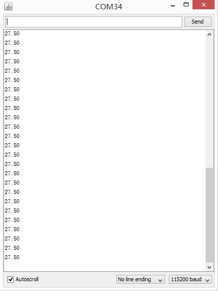
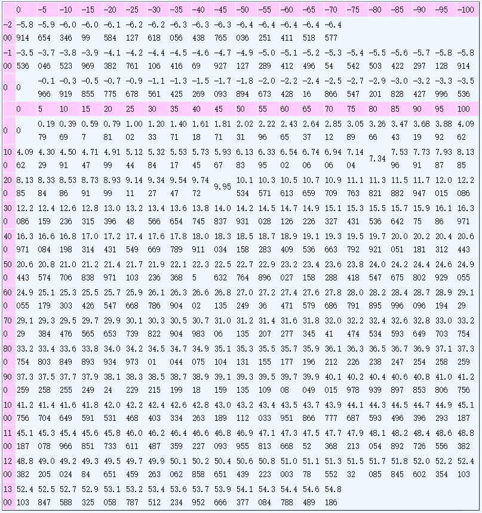

Thermocouples are very sensitive, requiring a good amplifier with a cold - compensation reference. The Grove - Temperature Sensor USES a K type thermocouple Temperature detection, with a Thermistor to detect The ambient Temperature as Temperature compensation. The detectable range of this Sensor is -50-600℃ , and The accuracy is ±(2.0% + 2℃)

Here is an example to show you how to read temperature information from the sensor.
We need a Seeeduino V3.0 and a Grove - High Temperature Sensor.
There's a I2C Port on Seeeduino, actually it's connect to A4 and A5 else. So we can use this port to read data from the sensor.
Let's plug this sensor to I2C port of Seeeduino.
You can download the library in here
Then extract the library the Library folder of Arduino, open the demo in examples folder.
Then upload it to your Seeeduino.
Then, open your Serial Monitor, you can find the temperature in Celsius here.

As a reference, the following is K type thermocouple indexing table.

Copyright (c) 2008-2016 Seeed Development Limited (www.seeedstudio.com / www.seeed.cc)